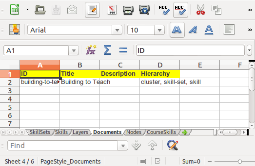
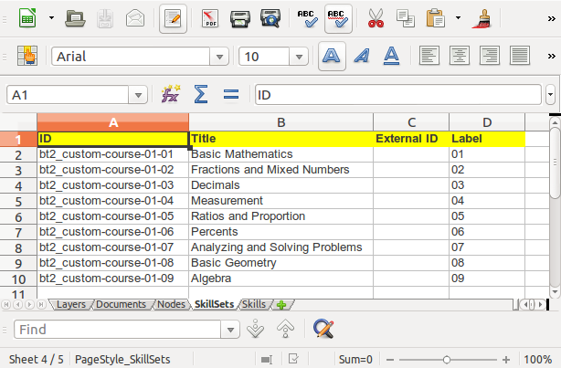

Importing Skills¶
We recommend beginning this process by first manually creating a document structure and at least one example of the items in your heirarchy down to skills as described in CanDo: Introduction and Setup.
Following that, return to the Skills Documents page (via the Skills link in the School page if necessary) and select Reports > Skills Export.
This will cause your browser to open a spreadsheet with several worksheets.
The Documents worksheet contains a row for each document in the system, including the one we created on the previous page:

The Layers worksheet defines the layers in the document hierarchies. In this case, the “Cluster” layer we previously created, plus the default Skill Set and Skill.
Data for any additional layers above Skill Sets and Skills are in the Nodes worksheet, in this case our example Cluster.
The SkillSets worksheet contains the Skill Sets, including our single example. Note that the External ID column should be considered deprecated for Skill Sets.

The more complicated Skills worksheet contains the single example skill.
We will cover the CourseSkills worksheet when we begin associating skills with courses.
The next step is to get your skills data into this spreadsheet, following the example data you entered through the web interface.
Depending on what format your existing data is in, you might be able to simply cut and paste into the spreadsheet cells. Depending on your skills (or access to people with skills) you might be able to write a script that will parse your skills document and either directly insert the data into the spreadsheet, for example, using Python and python-excel.
The end result will look something like this:

and this:
Once this is done, you can import the spreadsheet by selecting Import Skill Data from the School page:
The newly populated Skill Sets: